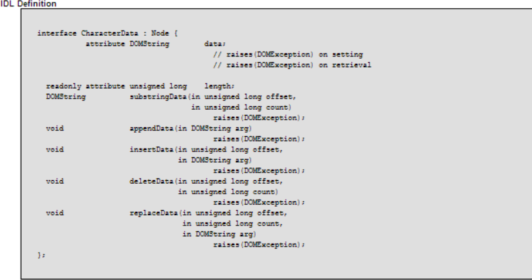

JavaScript Temelleri
Bölüm 19
W3C Belge Nesne Modeli (W3C Document Object Model) (W3C-DOM)
Bölüm 19.6.5 Sayfa 1
19.6.5 - CharacterData Arabirimi
Bu arabrimin özelliği, hiçbir fiziksel düğümün bu arabirim yapısında olmamasıdır. Bu arabirim, özelliklerini kalıtım yolu ile kendisinden özellik kazan arabirimlere, özellikle kısa sonra inceleyeceğimiz Text (Sözel Veri) arabirimine aktararak uygulanma yeteneği kazandırır. Bu arabirimin data ve length özellikleri yanında, substringData(), appendData(), insertData(), deleteData(), replaceData(), metotları tanımlanmıştır.

Şekil 19.6.5 - 1 - DOM Düzey 2 de characterData Arabiriminin IDL Yazılımı
Bu arabirimin hiç kullanılmaması olanağı vardır. Çünkü sayfaya yerleşik ve sözel veri içeriği olan bir elementin sözel veri düğümüne düğümüm tipi kontrol edilerek bellek referansı elde edildiğinde, sözel veriye, istenirse düğüm değerine erişm için, ister düğüm değeri özelliğinden yararlanılarak,
sözelVeriİçeriği = sözelVeriDüğümü.nodeValue;
veya, CharacterData arabiriminin data özelliğinden yararlanılarak,
sözelVeriİçeriği = sözelVeriDüğümü.data;
şeklinde erişilebilir.
Erişilen sözel veri istenirse, JavaScript öntanımlı String nesneinin metotlarından, istenirse bu kısımda incelenmekte olan, characterData arabiriminin ilgili metotları yardımı ile işlenebilir. Genellikle çekirdek JavaScript String nesnesi metotları gibi detaylı olmamasına karşın, küçük işlemler için CharacterData arabiriminin ilgili metotları uygulanabilir. Tüm belge çözümleyicilerinin güncel sürümleri, bu arabirimin yöntemlerini desteklerler.
Bu özellik geriye DOMString tipinde bir karakter dizigisi verisi döndürür. Bu verinin uzunluğu için aslında bir sınır konulmamış iken, belge çözümleyicileri, bu verinin uzunluğunu sınırlamış olabilirler. Bu nedenle, tek bir DOMString içine sığdırılamayan veriler, substringData() metodu kullanılarak parçalanabilirler.
CharacterData arabiriminin, data özelliğinin kullanımını açıklayan ve bu metodun, generik Node arabiriminin nodeValue özelliğinin değeri ile eşdeğer olduğunu belirten bir programın kodları aşağıda görülmektedir. Bu program bağlantılı olduğu sayfada calışmaktadır.
/* <![CDATA[ */ function sözelDüğüm(elementDüğümü) { for (var i = 0; i < elementDüğümü.childNodes.length ; i ++) { if(elementDüğümü.childNodes.item(i).nodeType === 3) { break; } } return elementDüğümü.childNodes.item(i); } function başlat() { var elementDüğümü = document.getElementById('hedef'); sözelVeriDüğümü = sözelDüğüm(elementDüğümü), sözelVeriİçeriği = sözelVeriDüğümü.data, yazılacakYer = document.createElement('P'); yazılacakYer.setAttribute('class', 'cursive-red'); sözelVeriDüğümü = document.createTextNode(sözelVeriİçeriği); yazılacakYer.appendChild(sözelVeriDüğümü); elementDüğümü.parentNode.insertBefore(yazılacakYer, document.getElementById('navbottom')); sözelVeriİçeriği = sözelDüğüm(elementDüğümü).nodeValue, yazılacakYer = document.createElement('P'); yazılacakYer.setAttribute('class', 'cursive-red'); sözelVeriDüğümü = document.createTextNode(sözelVeriİçeriği); yazılacakYer.appendChild(sözelVeriDüğümü); elementDüğümü.parentNode.insertBefore(yazılacakYer, document.getElementById('navbottom')); } sayfaYüklenmesiTamamlandıktanSonraÇalıştır(başlat); /* ]]> */
Yukarıdaki programın sonuçlarından her iki yöntemin de eşdeğer oldukları anlaşılıyor. Programcılar, her ikisi arasından istediklerini özgürce seçebilirler.
Bu programdaki sözelDüğümReferansı() fonksiyonu, bdelib.js program kitaplığına alınarak, bu kitaplıktaki fonksiyonlar ile birlikte kullanımına olanak sağlanmıştır.
Bu özellik geriye sözel verinin içerdiği karakter sayısını döndürür. Bu özelliğin kullanıldığı bir programın kodları aşağıda görülmekte ve sonuçları bağlı bulundğu sayfada görüntülenmektedir.
/* <![CDATA[ */ function başlat() { var elementDüğümü = document.getElementById('hedef'); sözelVeri = 'Sözel Verinin Uzunluğu : ' + sözelDüğüm(elementDüğümü).length + ' karakter (boşluklar dahil).', yazılacakYer = document.createElement('P'); yazılacakYer.setAttribute('class', 'cursive-red'); yazılacakYer.appendChild(document.createTextNode(sözelVeri)); önüneEkle(yazılacakYer, document.getElementById('navbottom'));} sayfaYüklenmesiTamamlandıktanSonraÇalıştır(başlat); /* ]]> */
Bu metodun amacı, bir sözel veri düğümünün karakterlerinin bir başkangıç karakterinden başlayarak, belirli bir karakter sayısını içeren bir alt karakter dizigisi oluşturmaktır. Karakterler daima 0 dan başlanarak sayılırlar.Metod, bir Text düğümü nesne örneğine uygulanabilir ve geriye bir Text düğümü nesne örneği değil, karakter dizigisi tipinde bir veri döndürür. Geri döndürülen verinin yeniden bir Text düğümü nesne örneğine dönüştürülmelidir. Kullanımı,
TextTipiDüğümNesnesiÖrneği.substringData(BaşlangıçKarakterSayısı, AlınacakKarakterSayısı);
Bu konudaki bir program aşağıda görülmekte ve bağlantılı olduğu sayfada çalışmaktadır.
/* <![CDATA[ */ function başlat() { var elementDüğümü = document.getElementById('hedef'), sözelVeriDüğümü = sözelDüğüm(elementDüğümü), sözelVeri =sözelVeriDüğümü.substringData(8, 12), yazılacakYer = document.createElement('P'); yazılacakYer.setAttribute('class', 'cursive-red'); sözelVeriDüğümü = document.createTextNode(sözelVeri); yazılacakYer.appendChild(sözelVeriDüğümü); önüneEkle(yazılacakYer, document.getElementById('navbottom')); } sayfaYüklenmesiTamamlandıktanSonraÇalıştır(başlat); /* ]]> */
Bu metodun amacı, sayfaya yerleşik bir sözel veri düğümünün içeriğine ekleme yapılmasıdır. Kullanımı,
sözelVeriDüğümü.appendData('Eklenecek Yeni Sözel Veri');
şeklindedir. CharacterData arabiriminin appendData() metodu geriye void döndürür. Yani, uygulandığı sözel veri düğümünün yapısını etkilemez.
CharacterData arabiriminin appendData() metodunun uygulanması ile, bir sözel veri düğümünün içeriğine yeni sözel veri eklenmesi yapılan bir programın kodları aşağıda görülmekte ve sonuçları ilişikli olduğu sayfada görüntülenmektedir.
/* <![CDATA[ */ function sözelVeriEkle(yerleşimYeri, eklenecekSözcükler) { sözelVeriDüğümü = sözelDüğüm(yerleşimYeri); sözelVeriDüğümü.appendData(eklenecekSözcükler); } function başlat() { var elementDüğümü = document.getElementById('hedef'), sözelVeri = ' (Bu kısım JavaSript CharacterData düğümünün appendData() metodu ile Yazılmıştır).'; sözelVeriEkle(elementDüğümü, sözelVeri); } sayfaYüklenmesiTamamlandıktanSonraÇalıştır(başlat); /* ]]> */
Burada geliştirilmiş olan, sözelVeriEkle() fonksiyonu, bdelib.js program kitaplığına eklenerek genel kullanıma açılmıştır.
Bu metodun amacı, bir sözel veri düğümünün sözel veri içeriğinin belirli bir başlangıç noktasından sonra, araya yeni bir sözcük dizgisi eklenmesidir. Kullanımı,
sözelVeriDüğümü.insertData(başlangıçKarakteri, 'Araya Girecek Yeni Sözel Veri');
şeklindedir. . CharacterData arabiriminin appendData() metodu geriye void döndürür. Yani, uygulandığı sözel veri düğümünün yapısını etkilemez.
CharacterData arabiriminin insertData() metodunun uygulanması ile, bir sözel veri düğümünün içeriğinin belirli yerinden başlanarak, yeni sözel veri eklenmesi yapılan bir programın kodları aşağıda görülmekte ve sonuçları ilişkli olduğu sayfada görüntülenmektedir.
/* <![CDATA[ */ function arayaSözelVeriEkle(yerleşimYeri, başlangıçKarakteri,eklenecekSözcükler) { sözelVeriDüğümü = sözelDüğüm(yerleşimYeri); sözelVeriDüğümü.insertData(başlangıçKarakteri, eklenecekSözcükler); } function başlat() { var elementDüğümü = document.getElementById('hedef'), sözelVeri = ' (Bu kısım JavaSript CharacterData düğümünün insertData() metodu ile Araya Eklenmiştir)'; arayaSözelVeriEkle(elementDüğümü, 8, sözelVeri); } sayfaYüklenmesiTamamlandıktanSonraÇalıştır(başlat); /* ]]> */
Burada geliştirilmiş olan, arayaSözelVeriEkle() fonksiyonu, bdelib.js program kitaplığına eklenerek genel kullanıma açılmıştır.
Bu metodun amacı, bir sözel veri düğümünün sözel veri içeriğinin belirli bir başlangıç noktasından sonra, belirli sayıda karakterin silinmesidir. Kullanımı,
sözelVeriDüğümü.deleteData(başlangıçKarakteri, silinecekKarakterSayısı);
şeklindedir. . CharacterData arabiriminin deleteData() metodu geriye void döndürür. Yani, uygulandığı sözel veri düğümünün yapısını etkilemez.
CharacterData arabiriminin deleteData() metodunun uygulanması ile, bir sözel veri düğümünün içeriğinin belirli yerinden başlanarak, yeni sözel veri eklenmesi yapılan bir programın kodları aşağıda görülmekte ve sonuçları ilişikli olduğu sayfada görüntülenmektedir.
/* <![CDATA[ */ function karakterSil(yerleşimYeri, başlangıçKarakteri, silinecekKarakterSayısı) { sözelVeriDüğümü = sözelDüğüm(yerleşimYeri); sözelVeriDüğümü.deleteData(başlangıçKarakteri,silinecekKarakterSayısı); } function başlat() { var elementDüğümü = document.getElementById('hedef'), karakterSil(elementDüğümü, 8, 4); } sayfaYüklenmesiTamamlandıktanSonraÇalıştır(başlat); /* ]]> */
Burada geliştirilmiş olan, karakterSil() fonksiyonu, bdelib.js program kitaplığına eklenerek genel kullanıma açılmıştır.
Bu metodun amacı, bir sözel veri düğümünün sözel veri içeriğinin belirli bir başlangıç noktasından sonra, belirli sayıda karakterinyerine yenilerinin konulmasıdır. Kullanımı,
sözelVeriDüğümü.replaceData(başlangıçKarakteri, yenilenecekKarakterSayısı);
şeklindedir. CharacterData arabiriminin replaceData() metodu geriye void döndürür. Yani, uygulandığı sözel veri düğümünün yapısını etkilemez.
Eğer başlangıçKarakteri + yenilenecekKarakterSayısı verinin length değerini aşarsa (aynı deleteData() metodunun ardından bir append() metodunun çağrılması gibi) verinin sonuna kadar tüm karakterler değiştirilir.
CharacterData arabiriminin deleteData() metodunun uygulanması ile, bir sözel veri düğümünün içeriğinin belirli yerinden başlanarak, eski karakterlerin silinerek yerlerine, yeni karakterlerin konulan bir programın kodları aşağıda görülmekte ve sonuçları ilişikli olduğu sayfada görüntülenmektedir.
/* <![CDATA[ */ function karakterDeğiştir(yerleşimYeri, başlangıçKarakteri, değiştirilecekKarakterSayısı, yerleştirilecekSözcükler) { sözelVeriDüğümü = sözelDüğüm(yerleşimYeri); sözelVeriDüğümü.replaceData(başlangıçKarakteri,değiştirilecekKarakterSayısı, yerleştirilecekSözcükler); } function başlat() { var elementDüğümü = document.getElementById('hedef'), karakterDeğiştir(elementDüğümü, 8, 4, 'xyxw'); } sayfaYüklenmesiTamamlandıktanSonraÇalıştır(başlat); /* ]]> */
Burada geliştirilmiş olan, karakterDeğiştir() fonksiyonu, bdelib.js program kitaplığına eklenerek genel kullanıma açılmıştır.